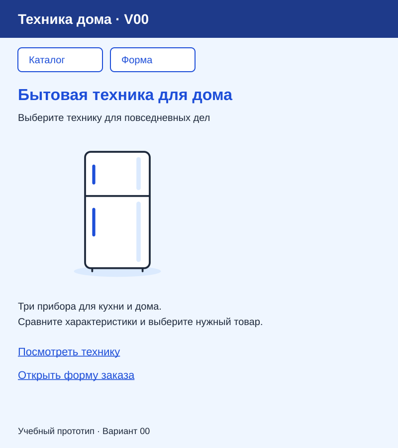
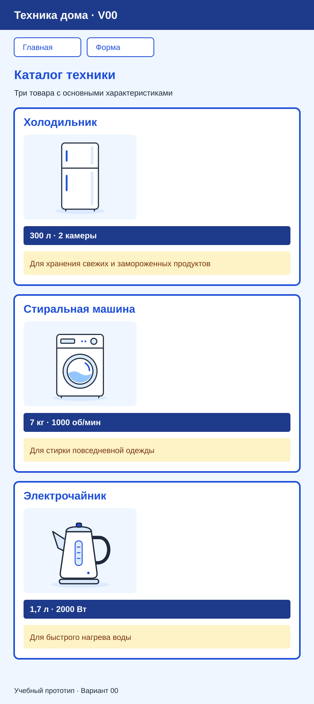
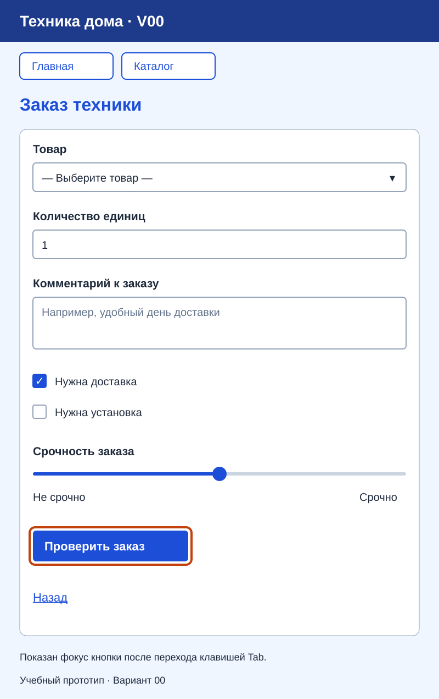
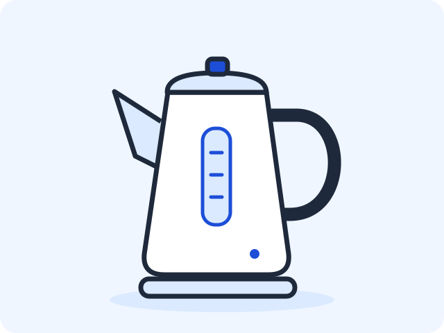
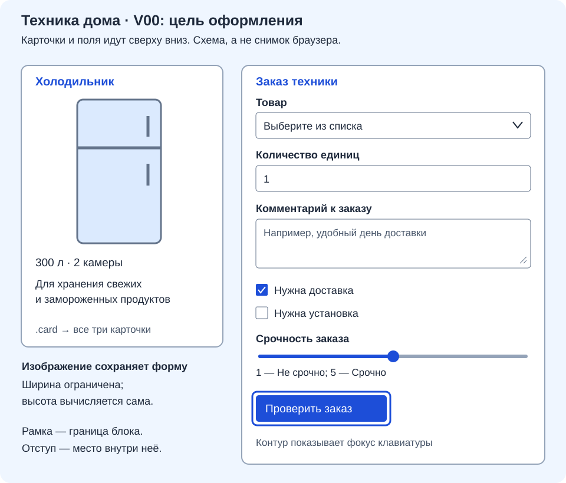

Оформление страниц, карточек каталога и формы
Продолжаем тот же проект после первой практики. Нужно сделать три страницы похожими по оформлению, карточки — аккуратными, форму — удобной. Карточки и поля пока остаются сверху вниз.
В разделе «Демонстрационный пример» показаны итоговые страницы, их данные и стили. В сохранённом проекте используйте свои тексты, изображения и цвета.
| Шаг | Что меняем | Что должно быть видно |
|---|---|---|
| 1 | Цвета и карточки | Общее оформление трёх страниц |
| 2 | Форма | Подписи над полями, два маленьких флажка |
| 3 | Фокус | При Tab видно выбранный элемент |
| 4 | Проверка и сохранение | Страницы работают, задание третьей пары доступно без сети |
Перед работой откройте главную, каталог и форму. Во всех файлах подключён общий style.css, у main есть класс page, у трёх article — card. В каждом меню две ссылки на другие страницы, без ссылки на саму себя.
Демонстрационный пример
Открыть пример
Это постоянный пример преподавателя для пары 16. Он хранится вместе с заданием и изображениями внутри папки пары. Студенты работают со своим номером, текстами и картинками; смена студенческого комплекта не меняет этот пример.
Задание: оформить три страницы Variant00-web по изображениям ниже. Используйте общий CSS, вертикальные карточки, цветные характеристики и описания, белую форму и заметную кнопку. Сохраните все данные и ограничения формы. В таблицах ниже приведён полный состав примера; способ выполнения разобран в статье пары 16.
Как выглядит результат практики
Это учебные изображения результата. Страницы нужно собрать из настоящих HTML-элементов, а не вставлять вместо них картинку. Проверяйте цвета, порядок и читаемость; совпадение размеров до пикселя не требуется.
В каждом меню только две ссылки на другие страницы: на главной — «Каталог» и «Форма»; в каталоге — «Главная» и «Форма»; в форме — «Главная» и «Каталог». Карточки пока идут сверху вниз.
Главная
Сохранение изображений: скачанные файлы называйте так, как указано в задании: 010-00-fridge.svg → fridge.svg, 010-00-washer.svg → washer.svg, 010-00-kettle.svg → kettle.svg. Сохраняйте их в своей папке images.

Каталог

Форма

Оранжевый контур кнопки — фокус после нажатия Tab; постоянно показывать его не нужно. Вид флажков, списка и ползунка может отличаться в разных браузерах.
Стили примера 00
Дополните существующие правила общего style.css. У абзацев характеристики используйте класс specs, у описаний — description, у каждого article — card. Цветовые правила этого примера уточняют базовые образцы статьи пары 16.
| Что оформить | Селектор | Что задать |
|---|---|---|
| Фон и текст | body |
background-color: #EFF6FF; color: #1E293B |
| Шапка | header |
background-color: #1E3A8A; color: #FFFFFF — название приложения в обычном абзаце |
| Заголовки и обычные ссылки | h1, h2, a |
color: #1D4ED8 — подчёркивание ссылок сохранить |
| Ссылки меню | nav a |
Белый фон, синие текст и рамка; при наведении синий фон и белый текст |
| Карточка | .card |
background-color: #FFFFFF; border: 4px solid #1D4ED8; border-radius: 0.5rem |
| Характеристика | .card .specs |
background-color: #1E3A8A; color: #FFFFFF; padding: 0.5rem; font-weight: bold |
| Описание | .card .description |
background-color: #FEF3C7; color: #78350F; padding: 0.5rem |
| Кнопка | .request-form button |
background-color: #1D4ED8; color: #FFFFFF |
Размеры карточек и основного блока — из пары 15. Оформление полей, белая поверхность формы, изображения и фокус — из пары 16. Не задавайте цвета характеристик и описаний общим селектором p: иначе изменятся и другие абзацы.
Что показать после практики
| Действие | На что посмотреть |
|---|---|
| Открыть главную → каталог → форму | Переходы работают, меню без ссылки на саму себя |
| Сравнить каталог с картинкой | Три отдельные карточки; синие характеристики и жёлтые описания; картинки не растянуты |
Пройти форму клавишей Tab и отправить её |
Фокус заметен; пустой выбор запрещён, корректная отправка показывает параметры GET |
Отдельного отчёта по каждому шагу не нужно. Ниже — данные для сборки преподавательского примера.
Содержание главной страницы
| Элемент | Текст или изображение |
|---|---|
| Название приложения | Техника дома · V00 |
| Заголовок главной | Бытовая техника для дома |
| Короткое пояснение | Выберите технику для повседневных дел |
| Описание | Три прибора для кухни и дома. Сравните характеристики и выберите нужный товар. |
| Основное изображение | fridge.svg  |
| Название перехода к каталогу | Посмотреть технику |
| Название перехода к форме | Открыть форму заказа |
| Подпись в подвале | Учебный прототип · Вариант 00 |
На паре 13 главная сохраняет эти тексты, изображение и подпись. Ссылка «Посмотреть технику» ведёт на catalog.html; на паре 14 ссылка «Открыть форму заказа» ведёт на form.html.
Содержание каталога
Название — «Каталог техники». Пояснение — «Три товара с основными характеристиками».
| № | Название | Характеристика | Описание | Файл изображения |
|---|---|---|---|---|
| 1 | Холодильник | 300 л · 2 камеры | Для хранения свежих и замороженных продуктов | fridge.svg |
| 2 | Стиральная машина | 7 кг · 1000 об/мин | Для стирки повседневной одежды | washer.svg  |
| 3 | Электрочайник | 1,7 л · 2000 Вт | Для быстрого нагрева воды | kettle.svg  |
Скопируйте SVG-файлы в папку images веб-проекта по инструкции занятия. Это нейтральные учебные иллюстрации без брендов, созданные для данного примера; рисовать их студентам не требуется.
Используйте все три позиции в указанном порядке. Каждая позиция — отдельный article с названием в h2, изображением с содержательным alt, характеристикой и описанием. Блоки идут сверху вниз. Каталог содержит переход на главную; на паре 14 добавляется переход к форме.
Содержание формы
Название формы — «Заказ техники». У каждого поля есть видимая подпись, связанная с элементом через for и id. Для отправляемых элементов задаются name.
| Подпись | Элемент и данные | Уточнение |
|---|---|---|
| Товар | select: Холодильник; Стиральная машина; Электрочайник |
Первая строка пустая; выбор обязателен |
| Количество единиц | Числовое поле | Минимум 1, шаг 1, начальное значение 1; поле обязательно |
| Комментарий к заказу | textarea |
Подсказка: «Например, удобный день доставки» |
| Нужна доставка | Независимый флажок | Выбран в начале |
| Нужна установка | Независимый флажок | Не выбран в начале |
| Срочность заказа | Ползунок от 1 до 5 | Начальное значение 3; края шкалы: «Не срочно» и «Срочно» |
Все шесть элементов таблицы входят в обязательный результат; порядок строк задаёт их расположение в примере 00. Флажки переключаются независимо.
Кнопка отправки — «Проверить заказ». Ссылка «Назад» ведёт на index.html. Из главной и каталога можно перейти к форме, из формы — вернуться на главную.
Отправка методом GET выполняется локально: страница перезагружается, а параметры видны в адресе. Сервер, хранение и обработка заказов отсутствуют. Настройка и объяснение — в статье 14.
Не заменяйте файлы целиком. Найдите нужное правило CSS и дополните его; после каждого шага сохраните и обновите браузер.
1. Цвета, карточки и картинки
В body сохраните фон и основной текст своего варианта. Для примера 00:
background-color: #EFF6FF;
color: #1E293B;
Это две строки внутри существующего body { ... }. Для заголовков и ссылок примера:
h1, h2 {
color: #1D4ED8;
}
a {
color: #1D4ED8;
}
У себя используйте свой акцент. Подчёркивание обычных ссылок и оформление меню сохраните.
В .card добавьте белую поверхность и скругление, оставив рамку и отступы первой практики:
background-color: #FFFFFF;
border-radius: 0.5rem;
В примере 00 заметные рамки и цветные абзацы заданы его таблицей стилей. Для демонстрации преподаватель берёт значения из этой таблицы; она уточняет базовые образцы статьи.
Для изображений проверьте общую защиту от выхода за край:
img {
max-width: 100%;
height: auto;
}
.card img {
display: block;
width: 100%;
max-width: 18rem;
}
Пробел в .card img означает «картинки внутри карточек». height: auto сохраняет пропорции; предел ширины не даёт картинкам каталога стать слишком большими.
Посмотрите результат: три отдельные белые карточки, читаемые заголовки, картинки не растянуты. Главная, каталог и форма используют общие цвета.
2. Форма: сначала классы, затем оформление
В form.html добавьте класс существующей форме, сохранив остальные атрибуты:
<form class="request-form" method="get">
| В существующем HTML | Что добавить |
|---|---|
| Абзацы со списком, количеством, комментарием и шкалой | class="form-field" — всего четыре абзаца |
| Абзацы двух флажков | Оставить без этого класса |
Пример начала абзаца количества:
<p class="form-field">
<label for="quantity">Количество единиц</label>
Поле под подписью, его id, name, ограничения ввода и закрывающий </p> оставьте прежними. Если класс уже есть, допишите новый через пробел.
Теперь оформите форму в style.css:
.request-form {
background-color: #FFFFFF;
border: 1px solid #94A3B8;
border-radius: 0.5rem;
padding: 1rem;
}
.form-field {
margin: 0 0 1rem;
}
.form-field > label {
display: block;
margin-bottom: 0.35rem;
font-weight: bold;
}
.request-form input,
.request-form select,
.request-form textarea,
.request-form button {
font: inherit;
}
> label выбирает подпись непосредственно внутри form-field: она окажется над полем. Подписи флажков остаются рядом с ними. font: inherit даёт полям тот же шрифт, что у формы.
Ширину задайте только нужным полям:
.request-form select,
.request-form input[type="number"],
.request-form textarea {
width: 100%;
padding: 0.6rem;
border: 1px solid #64748B;
border-radius: 0.35rem;
}
.request-form input[type="range"] {
width: 100%;
}
.request-form textarea {
resize: vertical;
}
Не пишите общее input { width: 100%; }: оно растянет флажки. Благодаря border-box из первой практики широкие поля помещаются вместе с рамками и отступами.
Для кнопки примера 00:
.request-form button {
padding: 0.65rem 1rem;
border: 2px solid #1D4ED8;
border-radius: 0.35rem;
background-color: #1D4ED8;
color: #FFFFFF;
}
В своём проекте возьмите акцент варианта и читаемый на нём цвет текста.

Посмотрите результат: четыре подписи над полями, два флажка маленькие и с подписями рядом, кнопка заметна. Все шесть прежних элементов формы сохранились.
3. Сделайте видимым выбор с клавиатуры
В CSS добавьте:
a:focus-visible,
input:focus-visible,
select:focus-visible,
textarea:focus-visible,
button:focus-visible {
outline: 3px solid #C2410C;
outline-offset: 3px;
}
Нажмите Tab несколько раз. Контур должен переходить между ссылками, полями и кнопкой. Enter открывает выбранную ссылку, пробел переключает флажок. Контур показывается при работе клавиатурой; не нужно добиваться его постоянного отображения.
4. Проверьте результат и подготовьтесь к третьей паре
Сохраните проект. Пройдите три короткие проверки:
| Что сделать | Что увидеть |
|---|---|
| Открыть главную → каталог → форму, сузить окно | Две ссылки меню работают; три карточки и картинки помещаются; оформление общее |
Нажать Tab, затем подписи флажков |
Контур заметен, каждый флажок переключается отдельно |
| Отправить форму без выбора товара, затем заполнить её корректно | Сначала браузер просит выбор; затем в адресе появляются параметры GET |
GET здесь только показывает учебные параметры, приложение не сохраняет заявку. Для повторной проверки начальных значений перейдите на главную и вернитесь в форму.
Если что-то нарушилось, найдите причину по таблице:
| Проблема | Где искать |
|---|---|
| Форма выглядит иначе, чем другие страницы | Подключение CSS в head |
| Флажки стали широкими | Слишком общее правило input |
| Подпись не выбирает поле | Совпадение for и id |
| Картинка растянута | Лишняя фиксированная высота |
| Изменение CSS не видно | Сохранение файла, селектор, повторное правило ниже |
Покажите преподавателю три страницы и форму. Отдельный письменный отчёт по практике не нужен. Если закончили раньше, исправьте замеченные неудобства и подготовьте задание для следующей пары.